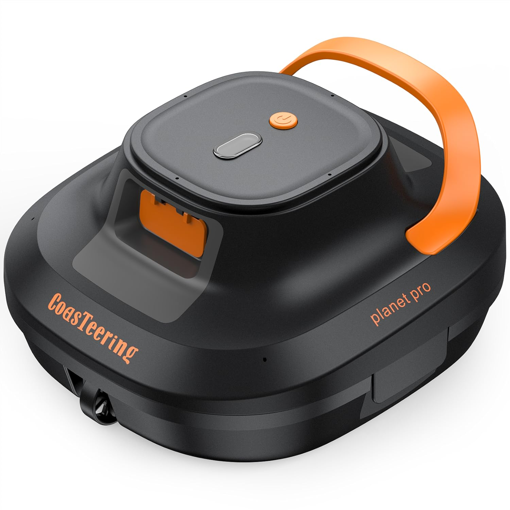

En este artículo
La realidad de los robots baratos: qué esperar y qué no
Voy a ser honesto desde el principio: con menos de 300 euros no vas a tener el robot más silencioso del mercado, ni la app más bonita, ni la filtración más fina. Eso existe, pero cuesta más.
Lo que sí puedes tener por menos de 300 euros es un robot que limpie el fondo de tu piscina de forma autónoma, que en algunos casos suba por las paredes, y que te ahorre un buen rato de trabajo cada semana durante toda la temporada. Para muchas piscinas familiares en España, eso es exactamente lo que se necesita.
El problema es que en este rango de precio hay mucho ruido. Marcas sin historial, fotos de producto engañosas, especificaciones que no se corresponden con la realidad. Por eso esta guía existe: para que no tengas que aprenderlo comprando el modelo equivocado.
Lo mínimo que debe tener un robot por menos de 300€
Antes de mirar modelos concretos, aquí está la lista de lo que no deberías sacrificar aunque el precio sea ajustado:
- Filtro real: no una simple malla, sino un cartucho o cesta de filtración extraíble y lavable. Sin esto, la suciedad vuelve al agua.
- Al menos 90 minutos de autonomía si es de batería — suficiente para piscinas de hasta 45 m².
- Asa de extracción: parece una tontería pero no lo es. Sin asa, sacar el robot del agua es un ejercicio de equilibrio que acabas haciendo con el brazo metido hasta el hombro.
- Marca con reseñas reales: mínimo 200-300 valoraciones en Amazon con media por encima de 4 estrellas. No te fíes de modelos con pocas reseñas aunque el precio sea tentador.
Los 3 mejores robots por menos de 300€ en 2026
WYBOT C1 — La mejor relación calidad-precio de este rango
Sin cable, sube por las paredes, 150 minutos de autonomía y navegación inteligente. A menos de 250 euros es una ganga que hace dos años no existía en este precio. Para piscinas de hasta 150 m² funciona muy bien. El filtro se limpia en dos minutos y el asa es cómoda. Si solo tuviera que recomendar un robot por menos de 300 euros, sería este.

CoasTeering Planet Pro — El más económico que merece la pena
Por menos de 200 euros tienes un robot sin cable con 120 minutos de autonomía para piscinas de hasta 120 m². No sube paredes — eso es su principal limitación — pero limpia el fondo con eficacia y es muy fácil de usar. Ideal si tu piscina tiene el gresite en buen estado y no necesitas limpieza de paredes.

WYBOT Osprey 700 — Para piscinas pequeñas y desmontables
Si tienes una piscina pequeña o desmontable y buscas algo sencillo y económico, el Osprey 700 hace bien su trabajo. Limpieza de fondo, filtración decente y manejo sin complicaciones. No esperes maravillas, pero cumple lo que promete.
Los que conviene evitar
En Amazon encontrarás decenas de robots de marcas desconocidas por 60, 70 u 80 euros con fotos muy atractivas. La mayoría tienen en común estas características:
- Pocas reseñas, o reseñas que parecen generadas artificialmente (todas de 5 estrellas, sin fotos ni texto real)
- Especificaciones vagas — "potente succión" sin indicar m³/h
- Sin sistema de filtración real, solo una malla que deja pasar la suciedad fina
- Sin garantía real ni servicio técnico en España
No digo que todos sean malos — alguno puede sorprender — pero el riesgo de gastar 70 euros en algo que acaba en el trastero a las dos semanas es muy alto. En este caso, gastar el doble en el WYBOT C1 es una decisión mucho más segura.
¿Merece la pena gastarse más?
La pregunta honesta que todo el mundo tiene en la cabeza: ¿para qué gastar 349 euros en el Aiper Scuba S1 si por 249 tengo el WYBOT C1?
La respuesta depende de tu piscina y de lo que valores. Si tienes una piscina de tamaño estándar y no te importa no tener app, el WYBOT C1 hace el trabajo. Pero si alguna de estas cosas te importa, vale la pena el salto:
- Filtración más fina: el Aiper filtra a 3 micras frente a las 180 del WYBOT. Si alguien en tu familia tiene alergia al polen o necesitas agua muy limpia, la diferencia se nota.
- App y programación: poder programar el robot para que limpie de noche y encontrar la piscina lista por la mañana es una comodidad difícil de valorar hasta que la tienes.
- Línea de flotación: el Aiper limpia esa franja en el borde del agua donde se acumula la cal y el bronceador. El WYBOT no llega hasta ahí.
Si nada de eso te importa especialmente, quédate con el WYBOT C1 sin dudarlo. Es un buen robot a un precio justo.